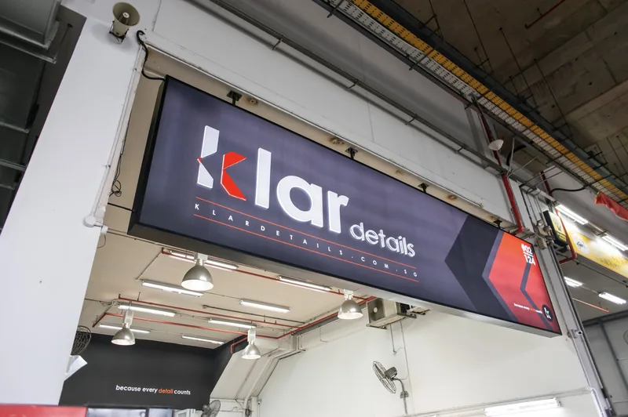

Featured (paid)Car workshops in Toh Guan and Jurong East
Toh Guan and Jurong East are in the West region, around Toh Guan Road East and the Enterprise Hub industrial building.
Toh Guan and Jurong East are in the west of Singapore. Jurong East MRT station, an interchange for the North South and East West lines, sits beside JEM, Westgate and IMM, and the Chinese Garden and Science Centre Singapore are nearby. Toh Guan Road and the Toh Guan industrial estate hold trade units, warehouses and car-related businesses. The Ayer Rajah Expressway and Pan-Island Expressway pass close by, so the area is easy to reach from Clementi, Bukit Batok and Jurong West.
Industrial estates in Toh Guan and Jurong East
Nearby MRT stations include Jurong East, Chinese Garden and Clementi. Landmarks include JEM, Westgate and Science Centre Singapore. Back to the West region.
Featured (paid) in Toh Guan and Jurong East
Paid placements, shown on their own. They are not part of any ranking or order on this page.
All workshops in Toh Guan and Jurong East
Basic listing
Car aircon
3K AutoCare @ Taman Jurong
5.0 (969 Google ratings) (checked November 2026) See Google reviews
1 Corporation Dr, #04-08, Singapore 619775
General servicing and repair
Customers mention: Aircon compressor replacement, Car aircon repair, Emissions test repair
Basic listing
Servicing
AF & CARS
4.6 (12 Google ratings) (checked November 2026) See Google reviews
48 Toh Guan Rd E, #01-141 Block No 48, Singapore 608586
General servicing and repair
Customers mention: Car servicing, Hybrid cars, Car maintenance advice
Basic listing
Servicing
Alpha Motorsports
5.0 (21 Google ratings) (checked November 2026) See Google reviews
48 Toh Guan Rd E, #02-105 Block No 48, Singapore 608586
General servicing and repair
Ranked 5th of 11 Toh Guan Road East and Enterprise Hub workshops with 20 or more Google ratings, by rating and number of ratings together
Customers mention: Car servicing, Diagnostics, Brake tuning
Basic listing
Servicing
Auto Wheels TG
4.5 (66 Google ratings) (checked November 2026) See Google reviews
48 Toh Guan Rd E, #04-142, Singapore 608586
General servicing and repair
Ranked 10th of 11 Toh Guan Road East and Enterprise Hub workshops with 20 or more Google ratings, by rating and number of ratings together
Customers mention: Car servicing, Performance parts installation, Fault diagnosis
Basic listing
Spray painting
Automotive Repair Centre [Jurong]
4.9 (382 Google ratings) (checked November 2026) See Google reviews
48 Toh Guan Rd E, #02-145/146/147/148/149, Singapore 608586
General servicing and repair
Ranked 2nd of 11 Toh Guan Road East and Enterprise Hub workshops with 20 or more Google ratings, by rating and number of ratings together
Customers mention: Accident repair, Insurance claims, Accident reporting
Basic listing
Servicing
Best Auto Service @ Toh Guan
5.0 (4 Google ratings) (checked November 2026) See Google reviews
48 Toh Guan Rd E, #01-135 Block No 48, Singapore 608586
General servicing and repair
Customers mention: Car aircon repair
Basic listing
Servicing
BOSZ AUTOHAUS
5.0 (12 Google ratings) (checked November 2026) See Google reviews
48 Toh Guan Rd E, #03-132 Block No 48, Singapore 608586
General servicing and repair
Customers mention: Car servicing, Engine warning light diagnosis, Throttle body cleaning
Basic listing
Servicing
Da Sheng Motoring
5.0 (6 Google ratings) (checked November 2026) See Google reviews
48 Toh Guan Rd E, #02-125 Enterprise Hub, Singapore 608586
General servicing and repair
Customers mention: Car servicing, Bodywork repair, Continental cars
Basic listing
Servicing
JC Wheel Dynamic
4.4 (40 Google ratings) (checked November 2026) See Google reviews
48 Toh Guan Rd E, #02-109 Block No 48, Singapore 608586
General servicing and repair
Ranked 11th of 11 Toh Guan Road East and Enterprise Hub workshops with 20 or more Google ratings, by rating and number of ratings together
Customers mention: Wheel alignment, Car servicing, Car repair
Basic listing
Servicing
JSS Motorworkz
48 Toh Guan Road East, Enterprise Hub, #02-140, Singapore 608586
General servicing and maintenance, Engine and gearbox repair and overhaul, Aircon servicing and overhaul
Basic listing
Servicing
KGC Workshop
4.6 (237 Google ratings) (checked November 2026) See Google reviews
1 Corporation Dr, #04-05, Singapore 619775
General servicing and repair
Customers mention: Breakdown help, Fault diagnosis, Accident repair
Basic listing
Servicing
Lay Auto Garage
4.8 (52 Google ratings) (checked November 2026) See Google reviews
48 Toh Guan Rd E, #02-103/104 Block No 48, Singapore 608586
General servicing and repair
Ranked 7th of 11 Toh Guan Road East and Enterprise Hub workshops with 20 or more Google ratings, by rating and number of ratings together
Customers mention: Breakdown repair, Coolant system repair, MINI cars
Basic listing
Servicing
Lightning Motorsport
4.9 (169 Google ratings) (checked November 2026) See Google reviews
1 Corporation Dr, #03-05, Singapore 619775
General servicing and repair
Customers mention: BMW cars, Full car service, Liqui Moly products
Basic listing
Servicing
MTM GROUP
4.9 (264 Google ratings) (checked November 2026) See Google reviews
48 Toh Guan Rd E, #01-138 Enterprise Hub, Singapore 608586
General servicing and repair
Ranked 3rd of 11 Toh Guan Road East and Enterprise Hub workshops with 20 or more Google ratings, by rating and number of ratings together
Customers mention: Car sales, Big brake kit installation
Basic listing
Servicing
Palm Motorsports
4.9 (198 Google ratings) (checked November 2026) See Google reviews
1 Corporation Dr, #02-18, Singapore 619775
General servicing and repair
Customers mention: Car servicing, Walnut blasting, Aircon flushing
Basic listing
Servicing
Proline Autowerks
4.9 (249 Google ratings) (checked November 2026) See Google reviews
1 Corporation Dr, #03-19, Singapore 619775
General servicing and repair
Customers mention: Aircon repair, Audi A4 servicing, Oil leak repair
Basic listing
Spray painting
Revol Carz Makeover
42 Toh Guan Road East, Enterprise Hub, #01-75, Singapore 608583
Spray painting and respray, Insurance claim repairs, Ceramic coating
Basic listing
Servicing
Soon Huat Autoserv
4.6 (38 Google ratings) (checked November 2026) See Google reviews
48 Toh Guan Road East #01-136 Enterprise Hub, Singapore 608586
General servicing and repair
Ranked 9th of 11 Toh Guan Road East and Enterprise Hub workshops with 20 or more Google ratings, by rating and number of ratings together
Customers mention: Wheel alignment, Tyre replacement, Coilover setup
Basic listing
Servicing
Squad Workshop
4.9 (183 Google ratings) (checked November 2026) See Google reviews
48 Toh Guan Rd E, #04-131 Block No 48, Singapore 608586
General servicing and repair
Ranked 4th of 11 Toh Guan Road East and Enterprise Hub workshops with 20 or more Google ratings, by rating and number of ratings together
Customers mention: Volkswagen, Audi and Skoda cars, Pre-purchase inspection, DSG gearbox checks
Basic listing
Servicing
Supreme Autocare
3.7 (3 Google ratings) (checked November 2026) See Google reviews
48 Toh Guan Rd E, #04-120/121, Singapore 608586
General servicing and repair
Customers mention: Car servicing, Transmission reseal
Basic listing
Servicing
Tee Guan Trading Co
4.4 (7 Google ratings) (checked November 2026) See Google reviews
21 Toh Guan Rd E, #01-38, Singapore 608609
General servicing and repair
Customers mention: Tyre replacement, Puncture repair, Battery help
Basic listing
Servicing
TT Motorsport @ Jurong
4.8 (798 Google ratings) (checked November 2026) See Google reviews
48 Toh Guan Rd E, #01-122 Block No 48, Singapore 608586
General servicing and repair
Ranked 6th of 11 Toh Guan Road East and Enterprise Hub workshops with 20 or more Google ratings, by rating and number of ratings together
Customers mention: Wheel bearings and shock absorbers, Overheating and radiator repair, Engine repair
Basic listing
Servicing
TTK Automotive
5.0 (7 Google ratings) (checked November 2026) See Google reviews
36 Toh Guan Rd E, #01-38 Enterprise Hub, Singapore 608580
General servicing and repair
Customers mention: Car servicing, Diagnostics, Repairs
Basic listing
Servicing
TYREPLUS Toh Guan
4.9 (1,012 Google ratings) (checked November 2026) See Google reviews
48 Toh Guan Rd E, #01-102, Singapore 608586
General servicing and repair
Ranked 1st of 11 Toh Guan Road East and Enterprise Hub workshops with 20 or more Google ratings, by rating and number of ratings together
Customers mention: Tyre replacement, Tyre rotation and balancing, Puncture check
Basic listing
Servicing
Uber Garage
4.7 (23 Google ratings) (checked November 2026) See Google reviews
48 Toh Guan Rd E, #06-116 Enterprise Hub, Singapore 608586
General servicing and repair
Ranked 8th of 11 Toh Guan Road East and Enterprise Hub workshops with 20 or more Google ratings, by rating and number of ratings together
Customers mention: Dyno tuning, Pre-purchase inspection, Car servicing